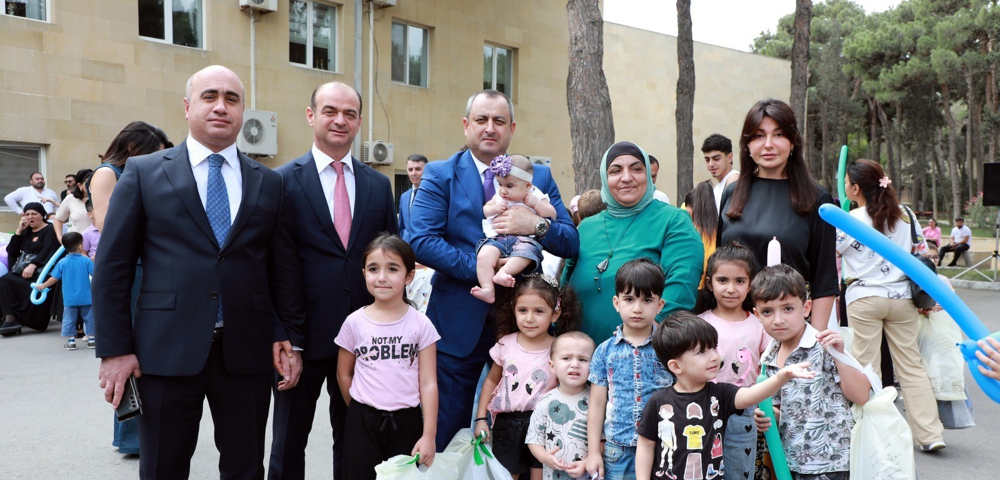
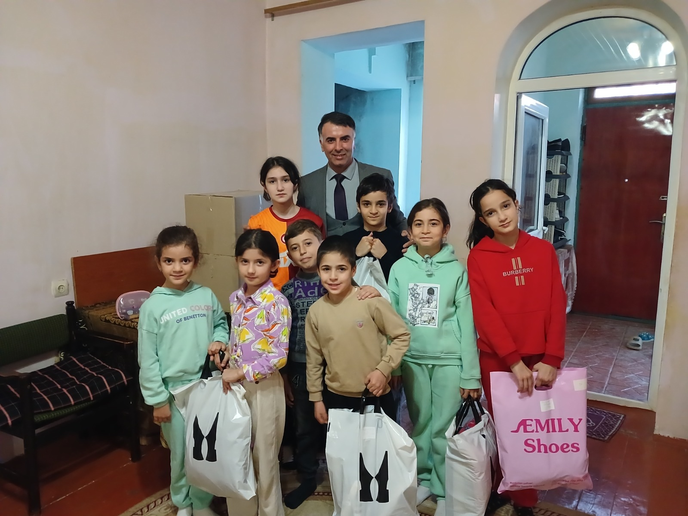
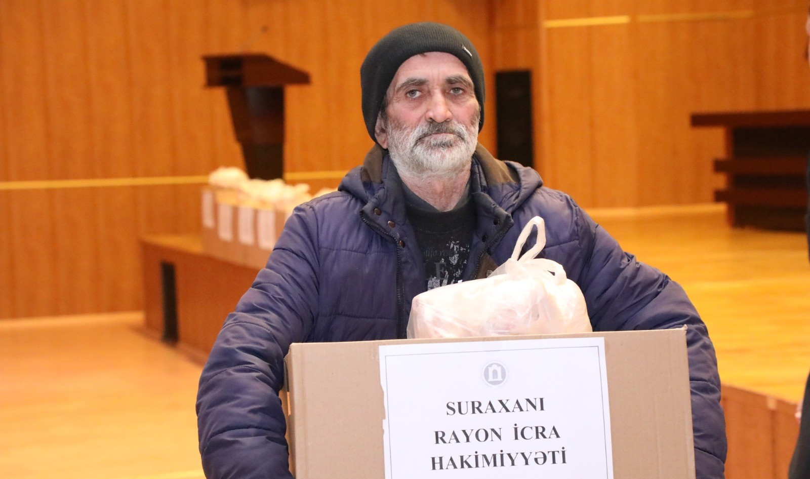
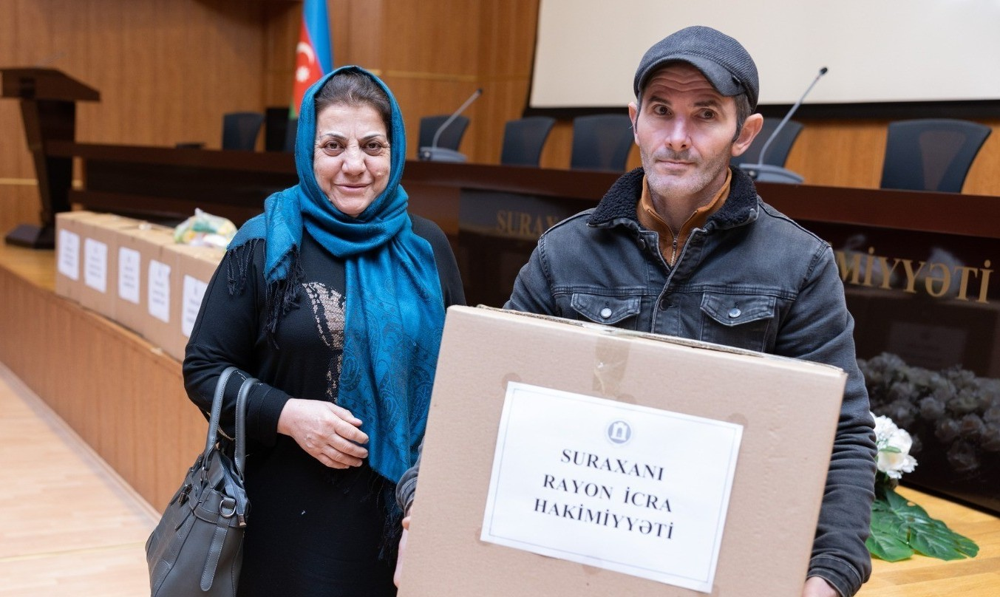

<div class="slide" id="slide-10">
    <div class="glass-card main-content full-width flex-layout overflow-hidden relative">

        <!-- Background Elements -->
        <div class="absolute top-0 left-0 w-full h-full overflow-hidden -z-10">
            <div class="absolute top-[-10%] right-[-5%] w-[600px] h-[600px] bg-purple-200/20 rounded-full blur-[100px]">
            </div>
            <div class="absolute bottom-[-10%] left-[-5%] w-[500px] h-[500px] bg-blue-200/20 rounded-full blur-[100px]">
            </div>
        </div>

        <!-- Content Container -->
        <div class="grid grid-cols-1 lg:grid-cols-12 gap-8 h-full relative z-10">

            <!-- Left Column: Text & Stats (4 cols) -->
            <div class="lg:col-span-4 flex flex-col justify-center space-y-6 animate-text pl-2">

                <!-- Header -->
                <div>
                    <span
                        class="bg-purple-100 text-purple-600 px-4 py-1.5 rounded-full text-xs font-bold uppercase tracking-wider inline-flex items-center gap-2">
                        <i class="ph-fill ph-heart"></i> SOSİAL DƏSTƏK
                    </span>
                    <h2 class="text-3xl lg:text-5xl font-black title-font mt-4 text-gray-900 leading-tight">
                        Sosial Qayğı <br><span class="text-purple-600">və Yardım</span>
                    </h2>
                    <p class="text-gray-600 mt-4 text-lg font-medium leading-relaxed">
                        Suraxanı Rayon İcra Hakimiyyəti tərəfindən məktəbli geyimləri və ərzaq yardımları ilə təminat.
                    </p>
                </div>

                <!-- Stats (Moved here) -->
                <div class="bg-white/60 backdrop-blur-md p-6 rounded-2xl border border-white/60 shadow-sm mt-4">
                    <div class="flex flex-col gap-6">
                        <div class="flex items-center justify-between animate-stagger">
                            <div>
                                <div class="text-4xl font-black text-orange-500 count-up" data-target="350">0</div>
                                <p class="text-[10px] font-bold text-gray-500 uppercase tracking-wide mt-1">Uşaq (Geyim)
                                </p>
                            </div>
                            <div
                                class="h-10 w-10 rounded-full bg-orange-100 flex items-center justify-center text-orange-500">
                                <i class="ph-fill ph-t-shirt text-xl"></i>
                            </div>
                        </div>
                        <div class="w-full h-px bg-gray-200"></div>
                        <div class="flex items-center justify-between animate-stagger">
                            <div>
                                <div class="text-4xl font-black text-green-600 count-up" data-target="1200">0</div>
                                <p class="text-[10px] font-bold text-gray-500 uppercase tracking-wide mt-1">Ailə (Ərzaq)
                                </p>
                            </div>
                            <div
                                class="h-10 w-10 rounded-full bg-green-100 flex items-center justify-center text-green-600">
                                <i class="ph-fill ph-basket text-xl"></i>
                            </div>
                        </div>
                    </div>
                </div>

            </div>

            <!-- Right Column: Image Grid (8 cols) -->
            <div class="lg:col-span-8 flex items-center justify-center h-full">
                <div class="grid grid-cols-3 gap-4 w-full h-full max-h-[600px] content-center p-4">

                    <!-- Photo 1 -->
                    <div class="group relative bg-white p-2 pb-8 shadow-md rounded-sm transform rotate-[-2deg] hover:rotate-0 transition-all duration-300 hover:z-20 hover:scale-110 animate-scale"
                        style="animation-delay: 0.1s;">
                        <div class="w-full h-full overflow-hidden relative aspect-[4/3]">
                            
                        </div>
                    </div>

                    <!-- Photo 2 -->
                    <div class="group relative bg-white p-2 pb-8 shadow-md rounded-sm transform rotate-[1deg] hover:rotate-0 transition-all duration-300 hover:z-20 hover:scale-110 animate-scale"
                        style="animation-delay: 0.2s;">
                        <div class="w-full h-full overflow-hidden relative aspect-[4/3]">
                            
                        </div>
                        <div
                            class="absolute -top-3 left-1/2 -translate-x-1/2 w-20 h-6 bg-white/30 backdrop-blur-sm border border-white/40 shadow-sm rotate-[-1deg] z-10">
                        </div>
                    </div>

                    <!-- Photo 3 -->
                    <div class="group relative bg-white p-2 pb-8 shadow-md rounded-sm transform rotate-[-1deg] hover:rotate-0 transition-all duration-300 hover:z-20 hover:scale-110 animate-scale"
                        style="animation-delay: 0.3s;">
                        <div class="w-full h-full overflow-hidden relative aspect-[4/3]">
                            
                        </div>
                    </div>

                    <!-- Photo 4 -->
                    <div class="group relative bg-white p-2 pb-8 shadow-md rounded-sm transform rotate-[2deg] hover:rotate-0 transition-all duration-300 hover:z-20 hover:scale-110 animate-scale"
                        style="animation-delay: 0.4s;">
                        <div class="w-full h-full overflow-hidden relative aspect-[4/3]">
                            
                        </div>
                        <div
                            class="absolute -top-3 left-1/2 -translate-x-1/2 w-20 h-6 bg-white/30 backdrop-blur-sm border border-white/40 shadow-sm rotate-[2deg] z-10">
                        </div>
                    </div>

                    <!-- Photo 5 -->
                    <div class="group relative bg-white p-2 pb-8 shadow-md rounded-sm transform rotate-[-3deg] hover:rotate-0 transition-all duration-300 hover:z-20 hover:scale-110 animate-scale"
                        style="animation-delay: 0.5s;">
                        <div class="w-full h-full overflow-hidden relative aspect-[4/3]">
                            
                        </div>
                    </div>

                    <!-- Photo 6 -->
                    <div class="group relative bg-white p-2 pb-8 shadow-md rounded-sm transform rotate-[1deg] hover:rotate-0 transition-all duration-300 hover:z-20 hover:scale-110 animate-scale"
                        style="animation-delay: 0.6s;">
                        <div class="w-full h-full overflow-hidden relative aspect-[4/3]">
                            
                        </div>
                    </div>

                </div>
            </div>

        </div>
    </div>
</div>
